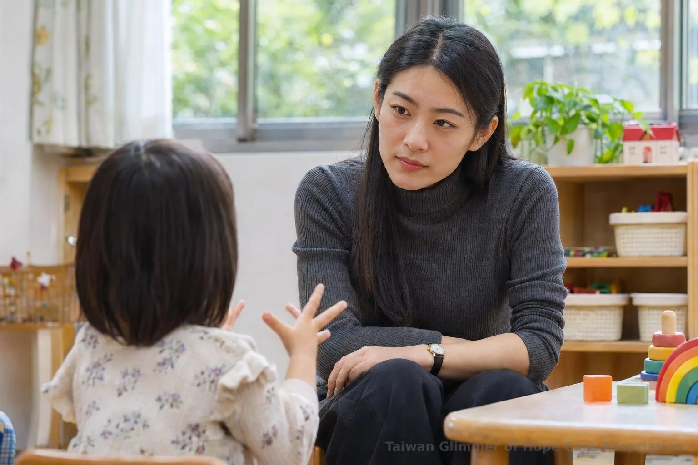
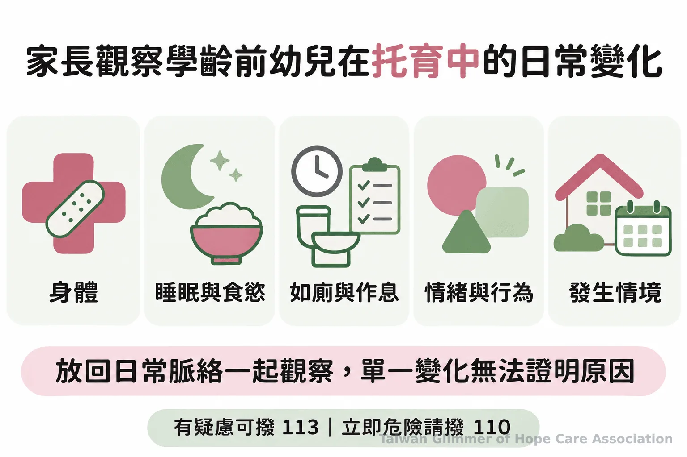
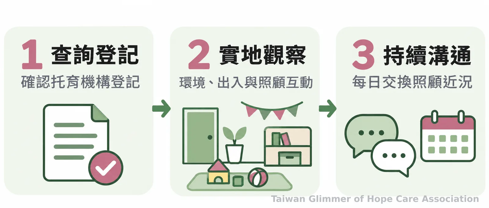

孩子還說不清楚，家長怎麼留意托育照顧？
學齡前孩子表達有限，家長與照顧者可從身體、睡眠、情緒和遊戲的持續變化了解近況，實地觀察托育環境；疑慮可撥113，立即危險撥110。
看見不同年紀的孩子｜系列一之 2
孩子還說不清楚時，大人會問：要怎麼知道他在托育或生活中是否安好？學齡前兒童表達能力仍在發展，家長、保母、老師與志工可留意孩子和平常相比是否持續或明顯改變。身體、情緒或遊戲訊號，不能證明遭受不當對待。
和孩子談身體界線時，也可參考用日常對話陪孩子認識身體自主與界線，依年齡說明不舒服時可以拒絕並找信任的大人。

一、先看孩子和平常有沒有不同
觀察持續或明顯的改變，並記下時間和情境。 傷痕、睡眠、如廁、情緒或行為都要放回日常脈絡理解，不能由單一表現推定原因。
難以說明的傷痕、反覆受傷，或突然抗拒某些照顧情境，值得多了解；睡眠、食慾、如廁和作息改變也可一併觀察。成長、生病或進入新環境都可能帶來相似反應。記下「何時、在哪裡、看見什麼」，先不替孩子或照顧者下結論。
退縮、黏人、易怒、攻擊或尿床等退化，需觀察是否持續及相關情境，並和熟悉孩子的照顧者核對；一次哭鬧或短暫退步不能判定受虐。
孩子說出不舒服時，大人可參考陪伴孩子表達與求助的方法。

二、遊戲重複出現某個主題，先陪伴與聆聽
不能只憑遊戲或畫作判定受虐。 成人可以平穩陪伴，聽孩子願意怎麼說，不把猜測放進問題裡，也不追問細節。
若害怕或受傷的主題反覆出現，可留意孩子情緒、前後情境和其他變化。遊戲與畫作只是了解近況的線索，不是診斷工具或受虐證據。
孩子願意說時，可以問「你想跟我說說嗎？」或告訴他「我在聽」。若孩子停下來，就給他時間；避免誘導或要求重複描述。孩子提到不安全時，先確認當下安全，再記下原話與觀察，交由正式管道協助。
三、選托育場所，查資料也看照顧互動
先核對立案或登記資訊，再實地了解環境、照顧互動和日常溝通。 官方查詢資料可作為起點，家長也可向地方主管機關確認不清楚之處。
我的E政府兒少查詢專區列有未登記托育、未立案托嬰中心及教保服務機構裁罰資訊。實地了解時，可觀察接送核對、訪客進出和照顧空間，並詢問照顧者如何分享孩子的日常狀況。登記查核之外，仍要持續溝通。
送托後，家長與照顧者可固定交換生活變化，例如睡眠何時改變、哪些時段較不安，並核對彼此的觀察。時間和情境能讓溝通聚焦孩子的需要。

四、微光怎麼陪伴孩子
微光與在地單位合作開設藝術陪伴課，讓孩子透過創作表達想法。 課程不作受虐判定，也不取代正式保護與評估。
微光以「在地小衛星」方式，走進已經陪伴脆弱家庭孩子的在地單位開課，目前有瑞芳愛鄰、板橋明穗及中壢宣愛三個據點，每處每月一堂藝術陪伴課。課程從藝術家作品帶出情緒主題，不設標準答案，也不比較畫得好不好；例如「心情的顏色」邀請孩子選一種顏色表達當天心情，再畫出秘密花園。作品不能用來判定受虐。
課程最後會請孩子分享「我看到……」「我喜歡……」，也對自己說「今天的自己，很棒！」瑞芳愛鄰是微光第一個兒童繪畫班的起點，中壢宣愛則是桃園第一個據點。藝術陪伴是創作與分享，若有安全疑慮，仍應交由正式保護管道處理。照片與紀錄，請見〈桃園第一個據點開課：中壢宣愛「心情的顏色」〉。
五、出現疑慮時，記錄觀察並尋求協助
記下客觀觀察，可撥113保護專線諮詢或通報；遇到立即人身安全危險，請撥110。 大人不必自行調查，也不必先證明發生了什麼才求助。
《兒童及少年福利與權益保障法》第53條規定，特定業務人員執行職務時知悉相關情形應依法通報；任何人知悉也得通報，通報人身分資料應保密。記錄日期、客觀情況、孩子原話及當時情境即可，不加推測。同法第69條禁止揭露特定兒少姓名或可識別身分的資訊，勿在群組或社群公開孩子資料。
衛生福利部說明，113保護專線「24小時全天候」提供諮詢、通報與轉介服務，並遵循保密原則。
- 記下觀察到的時間、情境與孩子原話，不自行推定原因。
- 有疑慮時撥113諮詢或通報；立即危險撥110。
- 保護孩子身分，不在社群或群組散播相關資訊。
先記下具體觀察，不憑單一訊號下結論；有疑慮可撥113諮詢，立即危險撥110。
常見問題
Q1: 孩子突然黏人或退縮，就代表遭受不當對待嗎？
不代表。先看變化是否持續及相關情境，也考慮疾病、成長或生活變動；仍有疑慮可撥113。
Q2: 孩子反覆玩受傷情節，能判定受虐嗎？
不能。遊戲和畫作不是判定工具；成人可平穩陪伴，並留意其他變化。
Q3: 孩子說不清楚時，成人可以怎麼回應？
用簡短、開放的話邀請孩子說，例如「你想跟我說說嗎？」不要誘導猜測或追問細節；記下孩子自發說的原話。
Q4: 選托育場所時，應該先確認哪些事情？
先查立案或登記資訊，再實地了解環境、出入方式與照顧互動。
Q5: 還不確定是否受虐，可以先打113詢問嗎？
可以。113提供全天候諮詢、通報與轉介；若有立即人身安全危險，先撥110。
找個平靜時刻，問孩子一天中喜歡或不舒服的部分，留給他慢慢回答。有疑慮可撥113諮詢；立即危險撥110。
- 觀察孩子相較平常的持續變化，單一行為、遊戲或畫作不能判定受虐。
- 查詢托育登記並實地了解照顧互動，送托後持續交換日常資訊。
- 有疑慮撥113諮詢或通報，立即危險撥110，並保護孩子身分。
參考文獻
- 法務部全國法規資料庫。《兒童及少年福利與權益保障法》第53、69條。https://law.moj.gov.tw/LawClass/LawAll.aspx?PCode=D0050001
- 衛生福利部社會及家庭署。兒少福利：113線上諮詢與兒少保護通報。https://www.mohw.gov.tw/fp-88-223-1.html
- 我的E政府。查詢與通報不當對待兒少專區。https://www.gov.tw/News_Content_67_768071
- 衛生福利部。托育服務。https://www.mohw.gov.tw/cp-88-230-1.html
本文同步刊於 appi.news。